地政学
ブリュッセルはベルギーの首都であり、欧州連合とNATOの機関が集まる政治都市でもあります。フランス語圏とオランダ語圏の接点に立ち、国内の連邦調整と欧州外交が同じ街路で交差するため、小さな首都以上の重みを持ちます。

🇧🇪 ベルギー / ヨーロッパ / World City Atlas
ベルギーの首都であり、欧州連合の主要機関が集まる政治都市です。王国政治、外交、金融、移民、漫画、ビール、ワッフル、鉄道、住宅格差が近い距離で重なる街です。
都市の骨格
ブリュッセルは小さな首都でありながら、EU、NATO、ベルギー連邦、地域政府、多言語の住民生活を重ねます。華やかな広場と官庁街、移民地区、鉄道駅が歩ける距離に並びます。
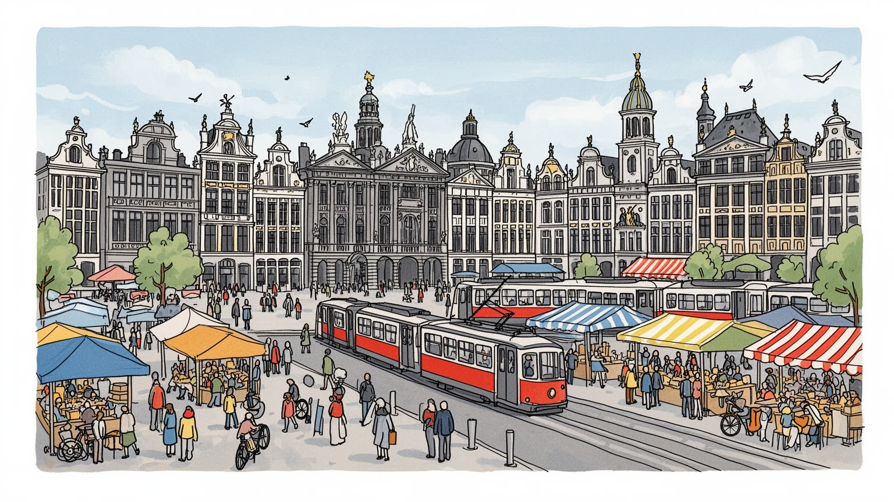
ブリュッセルはベルギーの首都であり、欧州連合とNATOの機関が集まる政治都市でもあります。フランス語圏とオランダ語圏の接点に立ち、国内の連邦調整と欧州外交が同じ街路で交差するため、小さな首都以上の重みを持ちます。
EU行政、外交、金融、法律、会計、研究、観光、物流が雇用を作ります。一方で清掃、警備、飲食、介護、配送、駅前小売と路上経済の労働が都市を支え、専門職と現場労働が近くで交わります。市場の商いも息づきます。
カトリックの教会、イスラムの礼拝、ユダヤ人の記憶、世俗的な市民文化、漫画、美術、音楽、ビール文化が重なります。大学の学生、クラブの夜、祝祭も多言語の生活習慣として見えます。多文化祭と学生の声も響きます。
観光客はグランプラス、王宮、美術館、漫画壁画、ビール、チョコを巡りますが、住民には家賃、通勤、学校選択、言語、治安、貧困が切実です。華やかな中心と移民地区の差を同時に読む必要があります。日々の論点です。
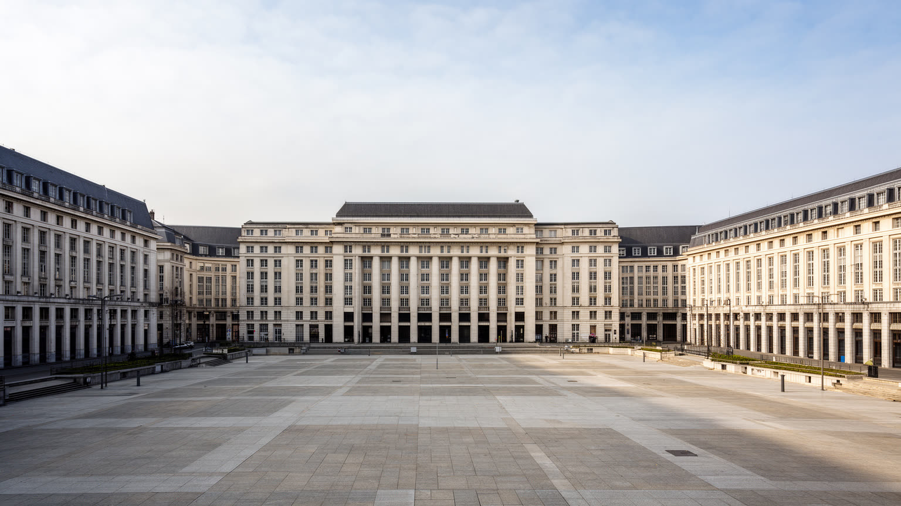
ブリュッセルは、欧州連合を一つの都市として感じられる数少ない場所です。欧州委員会、欧州理事会、欧州議会の活動、加盟国代表部、報道機関、法律事務所、ロビー団体、翻訳者、通訳、研究機関が、レオポルド地区からシューマン周辺に密集します。ここで決まる規則は、農業、気候、データ保護、競争政策、移民、消費者保護、対外制裁まで欧州各地の生活へ届きます。政治都市としての力は、巨大な広場よりも、会議室、廊下、カフェ、記者会見、深夜の交渉に表れます。一方で、EU地区はベルギーの日常から切り離された行政島として見られることもあります。高所得の国際職員が集まり、英語が通じる飲食店や短期滞在住宅が増えるほど、地元住民との距離は目立ちます。欧州の理想は平和と統合を掲げますが、ブリュッセルの街路では家賃、警備、交通、言語、公共空間の使い方として具体的な摩擦になります。欧州首都を読むには、旗や機関名だけでなく、そこで働く清掃員、翻訳スタッフ、警備員、政策担当者、記者、近所の学校へ通う子どもを同じ地図に置く必要があります。制度は抽象的に見えても、都市では昼食の列、地下鉄の混雑、ホテル価格、デモの規制として現れます。ブリュッセルの重要性は、欧州政治を日常生活の速度へ引き下ろして見せる点にあります。その近さが制度への信頼と都市の公平性を毎日問い直します。
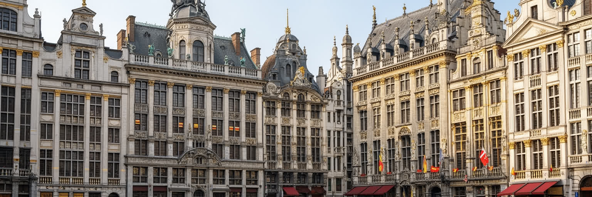
ブリュッセルは欧州政治の都市というだけでなく、ベルギー王国の首都でもあります。王宮、連邦議会、首相府、省庁、裁判所、各地域政府、共同体機関が集まり、フランス語圏、オランダ語圏、ドイツ語圏を調整する複雑な制度がここで動きます。ベルギーは一つの国でありながら、言語、教育、政党、メディア、地域経済が分かれ、首都ブリュッセル自体もフランス語話者が多い独立した首都地域として位置づけられます。オランダ語圏フランデレンに囲まれた多言語都市であることは、行政窓口、学校、交通案内、文化予算、選挙の争点に直接影響します。連邦制は妥協を重ねる技術を育ててきましたが、政府形成の長期化や責任の所在の見えにくさも生みます。王室は国家統合の象徴として残り、式典や外交で存在感を持ちますが、日常の政治は地域間の財政、雇用、移民、気候、治安をめぐる細かな交渉に支えられます。ブリュッセルを首都として読むには、王宮の景観と同時に、言語別の学校選択、通勤者の流入、周辺自治体との財政、地域アイデンティティの緊張を見なければなりません。ここでは国民国家、地域自治、欧州統合が一つの街で重なり、政治の多層性が生活の手続きとして現れます。ブリュッセルの行政的な難しさは、弱点であると同時に、多様な社会が交渉し続けるための都市的な訓練でもあります。この政治的な粘り強さが首都の個性になります。
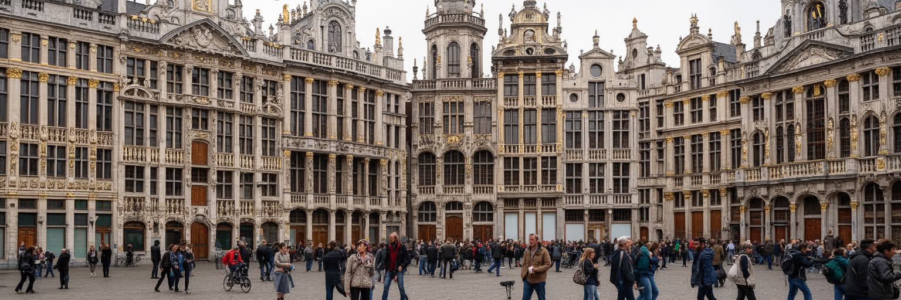
ブリュッセル観光の中心には、グランプラスの圧倒的な都市舞台があります。市庁舎、ギルドハウス、雨に光る石畳の広場は、商業都市、職能組合、王国政治、戦争と再建の記憶を凝縮しています。夏のOmmegang、冬のクリスマスマーケット、多文化祭は、観光客と住民が同じ広場を使う祝祭です。周辺には王宮、美術館、大聖堂、アールヌーボー建築、アトミウム、漫画壁画、ビール醸造所、チョコレート店が集まり、短い滞在でも多層的な街を歩けます。一方で、観光の集中は中心部の価格、土産物化、夜間の騒音、短期滞在、清掃負担を増やします。ホテルや飲食店は雇用を生みますが、厨房、客室清掃、警備、配送、案内、路上の物売りの仕事は不規則で賃金が高いとは限りません。遺産を守ることは、建物の外観だけでなく、広場が市民の集会、通勤、買い物、式典にも使われる公共空間であり続けることを意味します。ブリュッセルを観光都市として読むには、華やかなファサードと、移民地区の市場、駅周辺の混雑、清掃車の動線、雨風に押される屋台、揚げ物とビールの匂いを同じ視野に入れる必要があります。広場の美しさは都市の入口ですが、そこだけで街を理解すると、労働、格差、日常が見えにくくなります。訪問者の楽しさと住民の生活時間を両立させる管理が欠かせません。石畳の音も記憶に残ります。
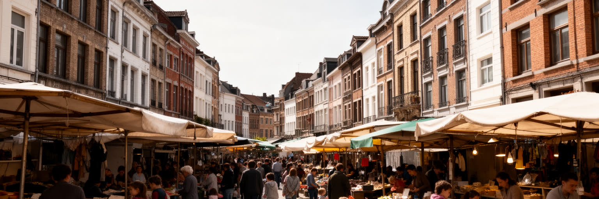
ブリュッセルの人口は、欧州機関の職員だけでなく、長い移民の歴史によって形づくられています。モロッコ、トルコ、コンゴ、ルワンダ、東欧、中東、南アジア、ラテンアメリカ、周辺国から来た住民が、飲食、清掃、建設、介護、交通、物流、教育、行政、文化産業で都市を支えます。モレンベーク、スカールベーク、アンデルレヒト、サン＝ジョスには、多言語の移民商店、モスク、教会、学校、若者センター、市場、家族経営の店が密集し、中心部の観光景観とは別の都市の実感があります。アンデルレヒトやUnion Saint-Gilloiseの試合日は、地区のカフェ、トラム、広場にサポーターの声が広がり、サッカーが階層や出自を越える共通語になります。移民地区は活力を持つ一方、失業、住宅の過密、教育格差、差別、治安への不安、メディアによる単純化にさらされやすいです。警備の文脈だけで地区を語ると、そこで暮らす人の仕事、育児、信仰、商売、近所づきあいが消えてしまいます。植民地支配の記憶も、コンゴ系住民の存在、美術館展示、公共空間の銅像を通じて現在の都市に残ります。移民都市として読むには、国際会議の英語だけでなく、アラビア語、フランス語、オランダ語、リンガラ語、トルコ語が交わる市場や学校を見る必要があります。住宅政策、教育支援、雇用、差別への対応、礼拝と文化の場所が整って初めて、多様性は都市の力になります。将来は、欧州の理念と地区の若者が安心して学び働ける現実を結びつけられるかにかかっています。
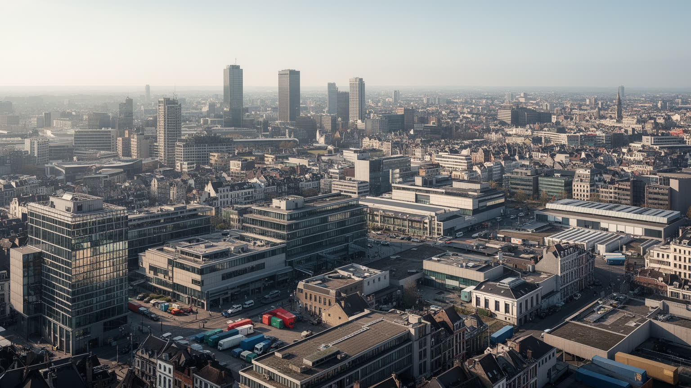
ブリュッセルの経済は、工場の煙突よりも、行政、外交、法律、会計、金融、保険、研究、メディア、教育、観光、会議産業の密度で成り立ちます。欧州連合とNATOの存在は、政策分析、翻訳、通訳、ロビー活動、広報、ホテル、警備、ケータリング、イベント運営を生み、多国籍企業や非政府組織の拠点も引き寄せます。ベルギー国内では、鉄道と道路が集まる中央性が、物流、卸売、空港関連、郵便、地域サービスを支えます。一方で、サービス経済の内部には大きな差があります。EU職員や国際企業の専門職は高い給与を得ますが、清掃、飲食、介護、配送、警備、ホテル、駅周辺の小売、観光客に向けた路上経済で働く人は、短時間契約や不安定な勤務に置かれやすいです。多くの仕事は都市の国際性を保つために不可欠なのに、政策議論の場では見えにくいです。大学と研究機関は学生、若手研究者、留学生を集め、翻訳、IT、公共政策、都市計画の人材を育てますが、居住費と言語能力で機会が分かれます。産業都市として読むには、欧州の会議室だけでなく、早朝の清掃員、空港から来る会議客、事務所を回る配送員、法律事務所の若手、ホテルの客室係を同じ労働市場として見る必要があります。都市の富は制度と人のサービスから生まれます。その富を住宅、学校、交通、技能訓練へ戻せるかが、社会的な持続力を決めます。
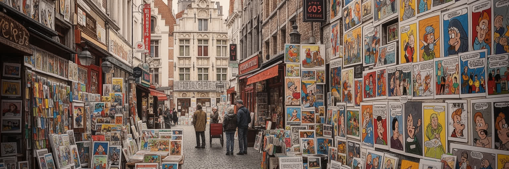
ブリュッセルの文化は、王国の美術館や欧州政治の堅さだけでは測れません。街角の漫画壁画、バンド・デシネの書店、タンタンやスマーフに連なる出版文化は、都市を歩く楽しさを作り、政治都市に親密な表情を与えています。漫画は観光の記号であると同時に、言語を越えて読まれるベルギー文化の輸出品でもあります。さらに、オルタのアールヌーボー建築、王立美術館、劇場、ジャズ、電子音楽、クラブの夜、デザイン、ファッション、現代美術、移民の音楽が重なり、表現は一つの国民文化に閉じません。宗教面ではカトリックの大聖堂、イスラムの礼拝、ユダヤ人の記憶、世俗化した市民生活が近接し、信仰は祝祭、葬儀、食、家族行事、教育の中で見えます。公共放送、新聞、国際報道、独立メディアは、多言語都市の議論を外へ運びます。文化産業は都市の魅力を高めますが、作家、翻訳者、舞台スタッフ、音楽家、カフェで働く人が高い家賃の中で場所を保てるかは切実です。文化都市として読むには、有名なキャラクターを探すだけでなく、複数言語で出版する苦労、小劇場の客席、学生のライブ、移民地区の音楽、学校での芸術教育を同じ流れに置く必要があります。文化は欧州機関の周辺に添えられた装飾ではなく、多様な住民が街を自分の場所として感じるための実践です。夜のクラブから朝のカフェまで、制度の都市を人間の尺度へ戻してくれます。
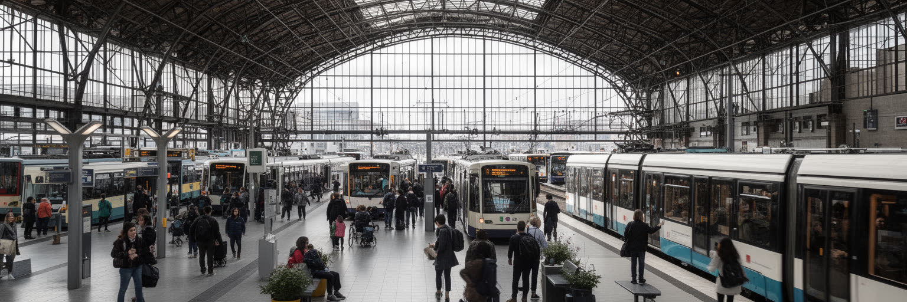
ブリュッセルは、ヨーロッパ北西部の鉄道地図で重要な結節点です。南駅からはパリ、ロンドン、アムステルダム、ケルン方面へ高速列車が走り、中央駅、北駅、地下鉄、トラム、バスが市内の通勤と観光を支えます。雨上がりの石畳をきしむトラム音、複数言語の車内放送、風の強い広場を抜ける自転車は、街の感覚を作ります。空港は欧州機関、国際企業、会議産業に欠かせず、周辺都市からの通勤者も多いです。小さな首都地域に多くの機能が集まるため、交通は政治、労働、住宅格差をつなぐ基盤です。EU地区で働く専門職、学校へ向かう子ども、介護の早朝勤務、南駅周辺の移民商店、観光客のスーツケースが同じ駅空間を使います。駅は都市を開く窓である一方、治安、不安定な居住、薬物問題、貧困、再開発の圧力が見える場所でもあります。車の渋滞と大気汚染を抑えるため、公共交通、自転車道、歩行者空間の改善は気候政策にも関わりますが、道路配分を変えると商店、配送、高齢者の移動に影響します。交通都市として読むには、国際列車の速さだけでなく、地下鉄の乗り換え、トラムの遅れ、夜間バス、駅前の安全、郊外から来る労働者の時間を見る必要があります。遠い都市へ短時間で行けることだけでなく、近くの地区同士を公平につなげられるかにも首都らしさが表れます。駅の響きも記憶に残ります。
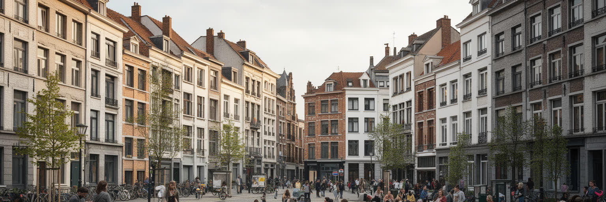
ブリュッセルの住宅問題は、政治都市の国際性と移民都市の現実を最も鋭く映します。EU職員、外交官、国際企業の専門職、短期滞在者が多い地区では、家具付き住宅や高価格の賃貸が増え、地元の若い世帯や低所得労働者は住まいを探しにくくなります。一方で、運河沿いや西側の地区には古い集合住宅、過密な住まい、低所得世帯、移民家族が多く、学校、雇用、公共空間、治安への不安が重なりやすいです。ブリュッセルは小さな面積の中に豊かな国際地区と貧困の集中が隣り合うため、格差が地図上で見えやすいです。再開発は空き地や旧工業地を改善し、公園や住宅を増やす可能性を持ちますが、家賃上昇と立ち退きの不安も伴います。社会住宅、家賃補助、断熱改修、空き家活用、地域の学校、保育、交通を一体で考えなければ、住宅政策は数字だけの供給策に終わります。古い建物は美しくても、断熱、湿気、暖房費、エレベーター、バリアフリーの問題を抱える場合も多いです。子どもが遊ぶ中庭、高齢者が買い物へ行く道、学生が借りる小部屋、家族が集まるカフェを見れば、住まいの質が生活の幅を決めることが分かります。住まいの都市として読むには、王宮やEU地区の近くで働く人がどこに住み、何語の学校へ子どもを通わせ、どれだけ通勤に時間を使うかを見る必要があります。都市の魅力を支える労働者が住めない街になれば、国際都市の機能そのものが弱ります。住宅は欧州の理念を日常で試す最初の場所です。
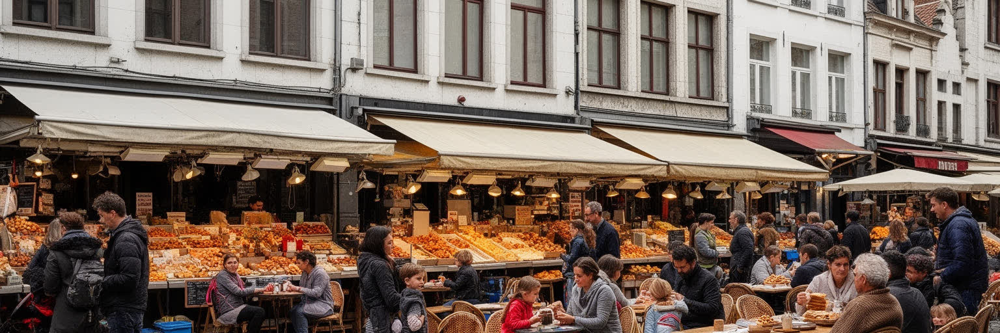
ブリュッセルの日常は、グランプラスの観光だけでなく、マルシェ、市場、パン屋、フリット店、ビール酒場、カフェ、移民食堂、学校帰りの買い物にあります。揚げたてのフリット、甘いワッフル、チョコレート、ムール貝、ベルギービールは訪問者にも分かりやすい入口ですが、住民の食卓はもっと多層的です。モロッコ料理、トルコ料理、コンゴ系の食文化、レバノン、ベトナム、ポーランド、イタリア、ポルトガルの店が地区ごとに並び、言語と家族の記憶を運びます。週末の市場では、雨避けのテントの下で、値段の交渉、世間話、祈りの前後の買い物、子どもの菓子、高齢者の少量買い、労働者の昼食が見えます。飲食業は観光と住民生活をつなぐ重要な雇用ですが、長時間労働、家賃、光熱費、人手不足、衛生管理、深夜交通に左右されやすいです。中心部の店が観光客向けに高価格化すると、近所の住民が使える食堂や小売は減っていきます。食を通じて読むには、名物を味わうだけでなく、誰が早朝に仕込み、誰が皿を洗い、どの市場が移民家族の生活を支え、どの商店街で買い物と会話が続くのかを見る必要があります。揚げ物の匂い、ビールの香り、多言語の声が同じ行列に混じるほど、ブリュッセルは欧州の会議場にとどまらず、住民が毎日腹を満たす生活都市であり続けます。日々の買い物が街を結びます。
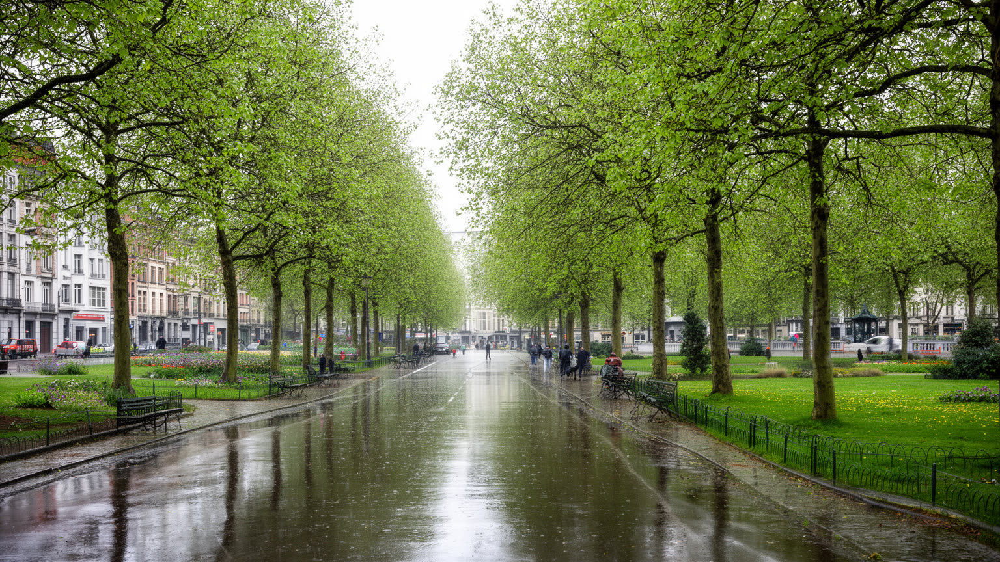
ブリュッセルの気候は海洋性で、雨、曇り、冷涼な夏、湿った冬が街の季節感を作ります。極端な暑さの印象は薄いものの、気候変動による熱波、集中豪雨、排水負荷、古い住宅の断熱不足は、すでに都市計画の重要な論点です。雨風を受ける石畳や建物が密な中心部では、夏の熱がこもりやすく、街路樹、公園、緑の中庭、透水性の地面が生活の快適さを左右します。ソワーニュの森、カンブルの森、地域の公園、運河沿いの緑地は、市民の散歩、自転車、ジョギング、子どもの遊び、暑さの避難先として大切です。しかし緑へのアクセスは地区によって差があり、低所得地区ほど木陰や質の高い公共空間が不足しやすいです。古い集合住宅では、冬の暖房費、湿気、断熱改修の費用が家計を圧迫します。気候対策は美しい公園づくりだけではなく、住宅改修、雨水管理、学校の涼しさ、公共交通、自転車道、エネルギー貧困への支援を含みます。気候の視点で読むには、雨の広場や緑の森だけでなく、排水溝、地下鉄入口、古い屋根、暑い教室、木陰の少ない通りを見なければなりません。欧州の気候政策を議論する都市だからこそ、足元の地区でも公平な適応が求められます。雨が多い都市の強さは、濡れた日常を快適にし、暑さと洪水に備える細かな公共投資に表れます。日々の公園での運動も暮らしを支えます。
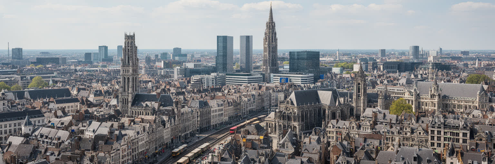
ブリュッセルを読むことは、欧州の理念と都市の日常の段差を同時に見ることです。欧州連合の機関は大陸規模の政策を議論し、NATOや各国代表部は安全保障と外交を動かします。ベルギーの連邦制度は言語と地域の妥協を重ね、王宮と議会は小国の国家運営を象徴します。グランプラスや美術館、漫画文化、ビールとチョコレートは訪問者を引き寄せますが、その背後には移民地区の市場、清掃や警備、ホテルの客室、鉄道駅の混雑、住宅格差、学校選択、信仰の場があります。ブリュッセルの特別さは、巨大都市の規模ではなく、多層の政治と多様な生活が短い距離に押し込められている点にあります。高所得の国際職員と低賃金のサービス労働、欧州統合の言葉と地区の若者の失業、気候政策の会議と古い住宅の断熱不足は、別々の話ではありません。都市の評価は、会議の数や観光名所の華やかさだけでなく、制度が住民の住まい、移動、教育、緑、食卓へ届くかで決まります。ブリュッセルは矛盾を抱えるからこそ、現代ヨーロッパを読む入口になります。ここを歩くと、統合、国民国家、移民、格差、文化、気候が抽象語ではなく、駅前、広場、団地、食堂、公園として現れます。欧州の首都らしさは、遠くを代表する力と、近くの生活を支える力の両方を持てるかにかかっています。その問いは、欧州全体の民主主義の未来にもつながります。